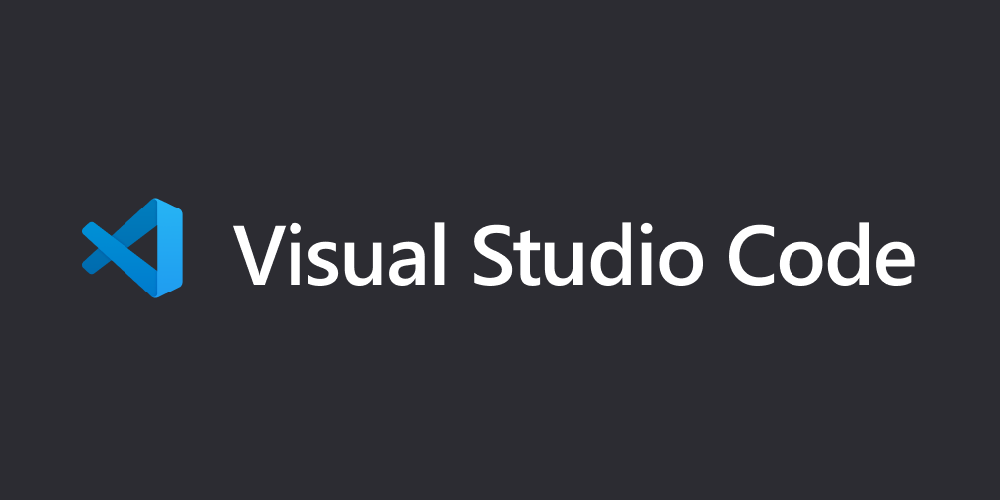

Visual Studio Code

Visual Studio Code (VS Code) — редактор исходного кода, разработанный Microsoft для Windows, Linux и macOS. Позиционируется как «лёгкий» редактор кода для кроссплатформенной разработки веб- и облачных приложений.
Включает в себя отладчик, инструменты для работы с Git, подсветку синтаксиса, IntelliSense и средства для рефакторинга. Имеет широкие возможности для кастомизации: пользовательские темы, сочетания клавиш и файлы конфигурации.
Распространяется бесплатно, разрабатывается как программное обеспечение с открытым исходным кодом, но готовые сборки распространяются под проприетарной лицензией.
Visual Studio Code основан на Electron и реализуется через веб-редактор Monaco, разработанный для Visual Studio Online.
Возможности
Visual Studio Code — это редактор исходного кода. Он имеет многоязычный интерфейс пользователя и поддерживает ряд языков программирования, подсветку синтаксиса, IntelliSense, рефакторинг, отладку, навигацию по коду, поддержку Git и другие возможности.
Многие возможности Visual Studio Code недоступны через графический интерфейс, зачастую они используются через палитру команд или JSON-файлы (например, пользовательские настройки). Палитра команд представляет собой подобие командной строки, которая вызывается сочетанием клавиш.
VS Code также позволяет заменять кодовую страницу при сохранении документа, символы перевода строки и язык программирования текущего документа.
С 2018 года появилось расширение Python для Visual Studio Code с открытым исходным кодом. Оно предоставляет разработчикам широкие возможности для редактирования, отладки и тестирования кода.
Также VS Code поддерживает редактирование и выполнение файлов типа «Блокнот Jupyter» (Jupyter Notebook) напрямую «из коробки» без установки внешнего модуля в режиме визуального редактирования и в режиме редактирования исходного кода.
На март 2019 года посредством встроенного в продукт пользовательского интерфейса можно загрузить и установить несколько тысяч расширений только в категории «programming languages» (языки программирования).
Также расширения позволяют получить более удобный доступ к программам, таким как Docker, Git и другие. В расширениях можно найти линтеры кода, темы для редактора и поддержку синтаксиса отдельных языков.
Visual Studio Code имеет поддержку плагинов, доступных через Visual Studio Marketplace. Они могут включать в себя дополнения к редактору, поддержку дополнительных языков программирования, статические анализаторы кода.
С мая 2019 года доступен закрытый тест редактора Visual Studio Online на основе VS Code. Он поддерживает все расширения и IntelliCode. Не нужно путать это с репозиторием для DevOps, который также не так давно запустила Microsoft.